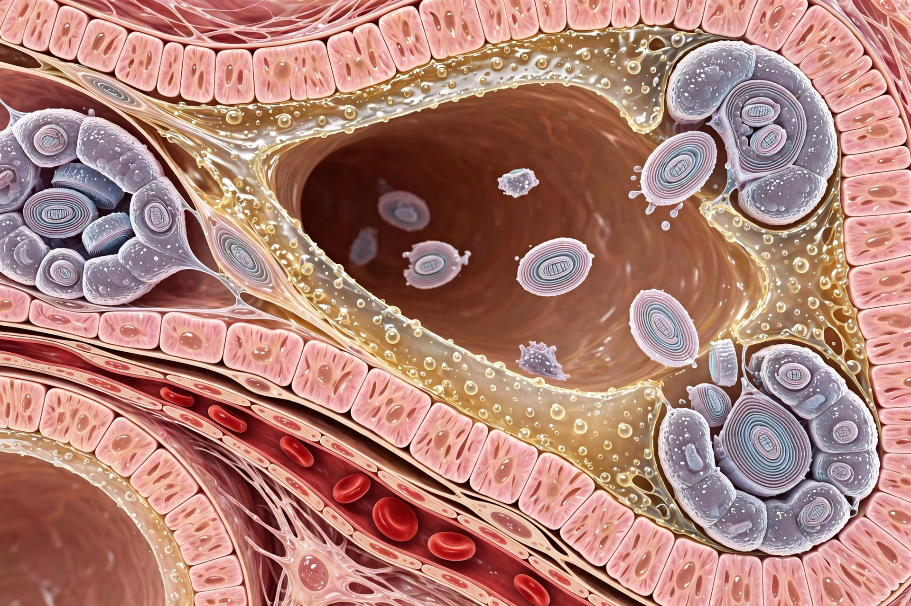

| Produced by | Type II alveolar epithelial cells |
|---|---|
| Composition | ~90% lipids (mainly dipalmitoylphosphatidylcholine), ~10% proteins (SP-A, SP-B, SP-C, SP-D) |
| Function | Lowers alveolar surface tension; prevents alveolar collapse; aids lung compliance and host defence |
| Clinical relevance | Infant respiratory distress syndrome; surfactant replacement therapy |

Pulmonary surfactant is a surface-active mixture of lipids and proteins secreted by type II alveolar cells into the alveoli of the lungs. Its principal function is to reduce surface tension at the air–liquid interface inside the alveoli, preventing their collapse at the end of expiration and greatly decreasing the work of breathing.
Surfactant is about 90% lipid, dominated by the saturated phospholipid dipalmitoylphosphatidylcholine (DPPC), and about 10% protein, including the surfactant proteins SP-A and SP-D (collectins involved in innate immunity) and the hydrophobic SP-B and SP-C, which are essential for film spreading and stability. It is stored in lamellar bodies and secreted into the alveolar lining fluid. Production begins in the fetus around 24–28 weeks of gestation and matures by about 35 weeks.
By lowering surface tension more strongly as the alveolar surface shrinks during exhalation, surfactant stabilises alveoli of different sizes, increases lung compliance, and keeps the alveoli dry by balancing fluid forces.
Premature infants who lack sufficient surfactant develop infant respiratory distress syndrome (hyaline membrane disease). Exogenous surfactant preparations, derived from animal lungs or synthesised, are administered through the trachea and have dramatically reduced neonatal mortality since their introduction around 1990. Surfactant dysfunction also contributes to acute respiratory distress syndrome (ARDS) in adults.